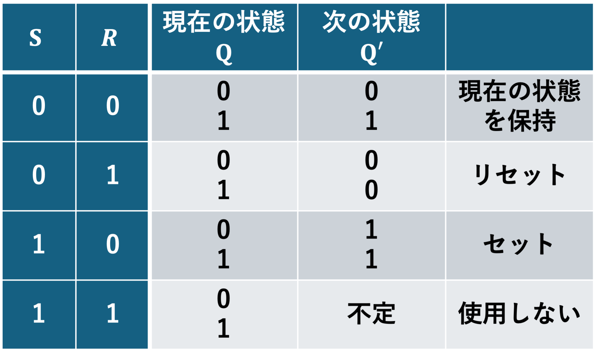
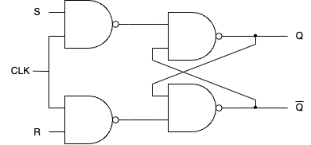

9. クロックの役割，同期回路と非同期回路#
到達目標
記憶の役割を果たすSRフリップフロップを実装できる．
順序回路におけるクロックの役割を説明できる．
同期回路と非同期回路の違いを，利点・注意点とともに述べられる．
状態遷移の考え方を理解する．
今日の問い
なぜクロックがあると安全に状態を更新できるのか？
同期回路と非同期回路，それぞれのメリットとデメリットは何か？
キーワード
クロック
同期回路，非同期回路
状態遷移
9.1. 第8回の復習と続き（記憶）#
9.1.1. 電子回路でのNOTゲート・NANDゲートの実装#
電源（電圧\(V+\)）を1，アース（電圧\(0\)）を0と扱う．
NOTゲートは電子回路では次のように実装される．
入力が電圧\(0\)(0)であればトランジスタは上下の導線を通さず，出力は電圧\(V+\)(1)となる．
入力が電圧\(V+\)(1)であればトランジスタは上下の導線を通し，電源からアースへ電流が流れ，出力は電圧\(0\)(0)となる．
NANDゲートは電子回路では次のように実装される．

入力A・Bの片方だけでも電圧\(0\)(0)であればトランジスタは上下の導線を通さず，出力は電圧\(V+\)(1)となる．
入力A・Bの両方が電圧\(V+\)(1)であればトランジスタは上下の導線を通し，電源からアースへ電流が流れ，出力は電圧\(0\)(0)となる．
9.1.2. NOTゲートによる状態の記憶#
\(P=0\)のとき，\(Q=1\)でないと矛盾
\(P=1\)のとき，\(Q=0\)でないと矛盾
\(P=0\)であれば\(Q=1\)が，\(P=1\)であれば\(Q=0\)が保持（記憶）される．
9.1.3. NANDゲートによる状態の記憶#
NOTゲートをNANDゲートに置き換え，片方を入力として外に配線すれば次のようになる．
記憶される部分を出力として外に配線すれば次のようになる．

この回路は出力に状態（0 or 1）を記憶でき，この回路をフリップフロップと呼ぶ．
Note
第8回演習2
\(A,B\)の全ての組み合わせに対して\(P,Q\)はどの値を取れば良いか考えよ．
\(A\) |
\(B\) |
\(P\) |
\(Q\) |
|---|---|---|---|
0 |
0 |
||
0 |
1 |
||
1 |
0 |
||
1 |
1 |
||
1 |
1 |
※ \((A,B)=(1,1)\)のときは2通りの可能性がある．
入力の値が\((A,B)=(0,1)\)から\((1,1)\)に変わったとき，出力\((P,Q)\)の値はどうなるか．
入力の値が\((A,B)=(0,0)\)から\((1,1)\)に変わったとき，出力\((P,Q)\)の値はどうなると予想されるか．
9.2. SRフリップフロップ#
NANDゲートを使用した記憶の回路を実装する場合には，次のようにNOTゲートを挟んで実装する． この回路をSRフリップフロップと呼ぶ． ここでは出力は\(Q\)とその否定\(\overline{Q}\)のみであるとする．

Note
演習1
SRフリップフロップではNOTゲートを挟むことで状態を記憶する入力を\((S,R)=(0,0)\)とする． NOTゲートを挟まない場合の\((S,R)=(1,1)\)を記憶する入力しないのはなぜだと思うか．
ヒント：0は電圧が低いことに，1は電圧が高いことに対応している．
9.2.1. 状態遷移#
記憶を考えることで，状態の時間変化を考慮する必要が生じる． そこで状態\(Q\)が入力に対してどのように変化するか，次の状態\(Q'\)の値を調べる． これを次のように状態遷移表として考える．

\(S=1\)とすればセット(set)され，\(R=1\)とすればリセット(reset)される．
9.3. クロック#
同期：様々な作業の相対的な順番を決めて手続きを実行する必要があり，この順番を決めることを「同期を取る」と呼ぶ．
作業の順番が回ってくるまでデータを記憶しておく必要があり，これにフリップフロップのような回路を使用する．
クロック：同期を取るための合図となるもの．回路全体の時間のものさしであり，一定周期で規則的に0と1を繰り返すことで実現される．
周期の逆数である周波数が単位時間あたりの0・1の繰り返しの回数を表し，クロック数を表現する量として使用される．
1周期\(T\)[秒]／周波数 \(f=\frac{1}{T}\)[Hz]
\(f\)が高いほど1サイクルが短く高性能だが，タイミング制約が厳しい．
9.3.1. 同期回路と非同期回路#
同期回路：クロックに同期して動作する回路．
非同期回路：クロックの動作に縛られず，入力信号の伝達に任せて出力信号が決まる回路．
メリットとデメリット
種類 |
メリット |
デメリット |
|---|---|---|
同期回路 |
動作が安定しやすい． |
クロックを待つ時間だけ動作が遅くなる． |
非同期回路 |
高速に動作する． |
タイミングによっては動作が不安定になりやすい． |
9.3.2. 同期付きSRフリップフロップ回路#
クロック（\(\mathrm{CLK}\)）が1のときのみ入力を許可する．
\(\mathrm{CLK}=1\)のとき，\(S=0\)なら\(0\)を，\(S=1\)なら\(1\)とする．（\(R\)も同様）
\(\mathrm{CLK}=0\)のとき，\(S,R\)の値によらず\(0\)とする．
従って\(\mathrm{CLK}\)と\(S,R\)をANDで接続すれば良い．
これはNANDゲートに置き換えることができる．

9.4. 順序回路#
順序回路：初期状態から始まり，決まった順序で状態遷移を行う機能を実現する回路．
状態遷移図：状態ノードと，入力条件付きの矢印（次状態）で表す．
9.5. 順序回路の設計#
状態遷移図の作成：初期状態と終了状態を含む複数の状態を定義し，次に各状態への入力とそれにより生じる状態遷移と出力を定義する．
2進コード化：各状態と入出力を表する2進数の値を決め，1で作成した状態遷移図を2進数の値で描き直す．
状態遷移表の作成：現在の状態から入力により次の状態へ遷移し，出力する様子を状態遷移表にまとめる．
回路化：状態遷移表に従い，状態遷移図と同様の動作を行う順序回路を，フリップフロップと組合せ回路を用いて設計する．
9.5.1. 例：3枚入れるとコーヒーが出る自動販売機#
1種類の硬貨のみを考え，硬貨を3枚入れるとコーヒーが出てくる自動販売機を実装する．
Step 1：状態遷移図の作成

Step 2：2進コード化
入力：硬貨を投入する/しない → 1,0
出力：コーヒーを出す/出さない → 1,0
現在の状態：硬貨の枚数0,1,2枚 → 00,01,10

Step 3：状態遷移表の作成

Step 4：回路化
入力：硬貨を投入する/しない(1,0) → \(S\), 1bit
出力：コーヒーを出す/出さない(1,0) → \(G\), 1bit
現在の状態：硬貨の枚数0,1,2枚(00,01,10) → \(C_1, C_0\), 2bit ※ 現在の状態は記憶されないといけない．
次の状態：硬貨の枚数0,1,2枚(00,01,10) → \(N_1, N_0\), 2bit
状態の(11)は使用されていないため，ドントケアとして扱える．
\(N_1\)のカルノー図は

となるから
\[ N_1 = C_1 \cdot \overline{S} + C_0 \cdot S \]
Note
演習2
\(N_0\)のカルノー図を作成し，\(N_0\)を加法標準形で表せ．
\(G\)のカルノー図を作成し，\(G\)を加法標準形で表せ．
この後の回路の構成には「Dフリップフロップ」を使用するため，第11回に続きを解説する．
9.6. まとめ#
Note
復習
次の問いに対する自分なりの答えを述べよ．
なぜクロックがあると安全に状態を更新できるのか？
同期回路と非同期回路，それぞれのメリットとデメリットは何か？